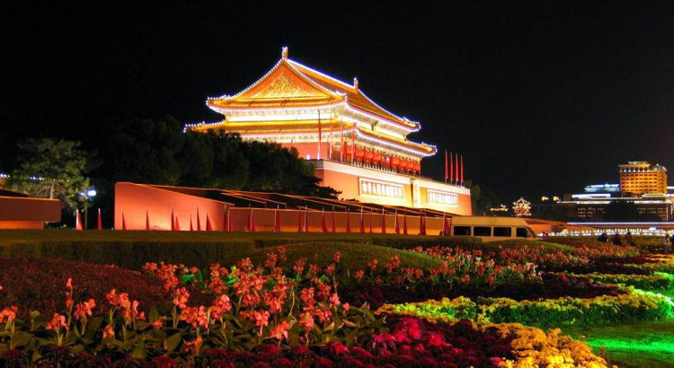

US Proposes Blue Dots Agreement to Counter One Belt One Road Initiative in Asia
This week there was a discussion in Russia about the possible countermeasures the US is planning against China’s One Belt One Road Initiative.Interestingly, due to the coronavirus and China, the stock markets are experiencing a turmoil.
The reason for the discussions is to develop additional strategies between Russia and China pertaining to the One Belt, One Road initiative, despite the virus outbreak.US Secretary Mike Pompeo also announced that US President Donald Trump has invited Southeast Asian leaders for a meeting in Las Vegas next month.The summit is supposed to take place March 12, 2020.
Last year, during the Indo-Pacific business forum, which was part of the ASEAN summit in Bangkok, US representatives announced their proposed initiative to create a network of the 'blue dots.'The next summit will be held in April.The summit brings together the members of the Association of Southeast Asian Nations.
During these summits the topics discussed are the political, economic, security, and socio-cultural development of Southeast Asian countries.The idea of the blue dots was originally proposed by the American Corporation For Private Foreign Investment (OPIC), with the support of the Australian Ministry of Foreign Affairs and Trade and the Japanese Bank for the International Cooperation (JBIC).
The blue dots proposed initiative is between Japan, the US and Australia.It is plausible to expect India would have an interest in joining such initiative, especially if it is specifically to counteract China.The two Asian nations are brought together by a large number of common interests in the international arena.
China and India cooperate within the framework of a number of international organizations and mechanisms, such as the BRICS.However, problems in bilateral relations remain, primarily in the military and political spheres.India has long been concerned about the rapid development and rearmament of the Chinese PLA, and Delhi has watched with alarm as Beijing increases its influence in the Indian ocean.In turn, China’s concern is caused by India’s military cooperation with those countries that fear the rise of the PRC and seek to create a sufficient geopolitical counterweight to China.
The Blue Dots Initiative seems to mirror the One Belt One Road initiative and may contain countermeasures.It also could aide in maintaining a certain geopolitical balance in Asia.The One Belt One Road initiative is the resurrection of the historic Silk Road.
Any agreement would be more beneficial for US trade (versus the One Belt One Road) since Japan and Australian export numbers do not signal larger profits and economic growth.Much of this depends on if Russia changes its course and starts realigning with international laws without a desire to conquer any more of Eastern Europe.Currently, China is the biggest trading partner with Australia.
Compare Australia, Japan, Russia, and China:
Australia
1.26% of total world GDP.
The main exports in 2019 (in US dollars):
Japan
Main exports 2019:
Russia
Main exports 2019:
China
18.3% of total world GDP
The main exports in 2019:
(Data Source: world exports).
Next month’s meeting in Las Vegas will provide a better understanding of the US plans with their Asian partners and the direction and shape of the resulting trade picture.
[bsa_pro_ad_space id=4]
Share on Facebook Tweet Follow us
Posted On: 2020-02-28T00:00:00
Posted By: Christina Kitova




Content Date: 2020-02-28
Download Date: 2021-07-09
Document ID: L0C04EITH